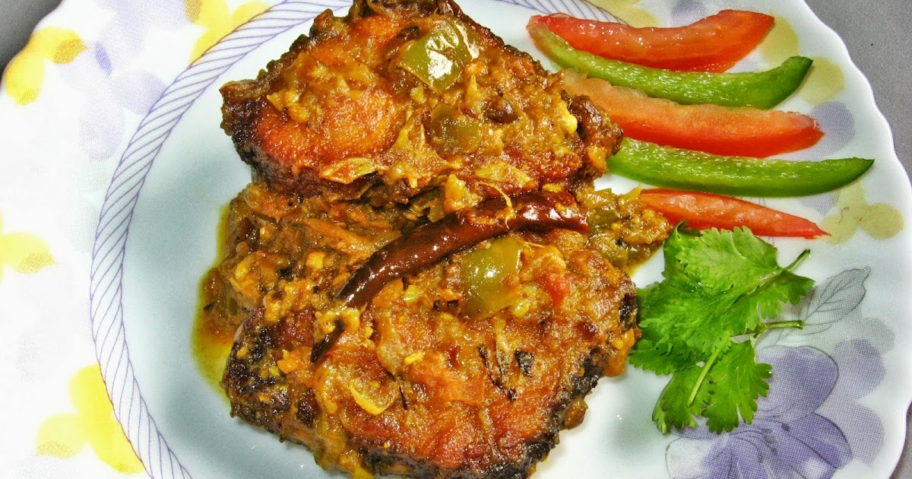

TRADITIONAL BENGALI CUISINE
Bengali Rui (Rohu) Fish Curry
Prep Time15 Minutes

Cook Time30 Minutes
Ingredients
- Rui / Rohu fish (with bone): 400–500 g
- Potatoes (optional): 200 g, cubed
- Onions: 1.5 cups, thinly sliced
- Ginger paste: 1.5 tbsp
- Garlic paste: 2 tbsp
- Tomato: 2 medium, finely chopped
- Turmeric powder: 1 tsp (½ tsp base + ½ tsp fish)
- Chili powder: 1–1.5 tbsp
- Coriander powder: 1.5 tbsp
- Salt: 1.5 tbsp (adjust)
- Cooking oil: 80 ml (mustard oil preferred)
- Whole spices: cumin seeds 1 tsp, bay leaf 1, green cardamom 2–3, cinnamon 1 small stick, dry red chilies 3–4
- Hot water: 2–2.5 cups
- Fresh coriander leaves: 3–4 tbsp, chopped
Steps to Cook
- Marinate the fish: Mix fish with 1 tsp turmeric, ½ tbsp salt, and 1 tbsp oil. Rest 10–15 minutes.
- Shallow‑fry fish: Fry lightly until golden on both sides. Remove.
- Koshano: Heat oil, add whole spices. Fry onions until soft. Add ginger & garlic. Add turmeric, chili, coriander, salt. Cook until oil separates.
- Add tomato: Add chopped tomatoes. Cook until soft. Add 1 cup hot water. Simmer 8–10 minutes.
- Add fish & potatoes: Add fish and potatoes. Add 1.5–2 cups hot water. Cook covered 12–15 minutes.
- Finish: Sprinkle roasted cumin & coriander leaves. Simmer 5–8 minutes until oil floats.